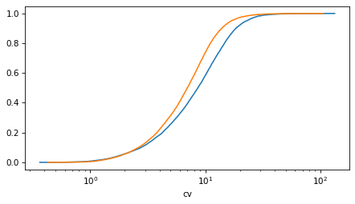
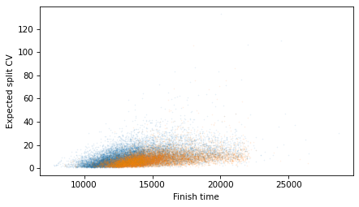
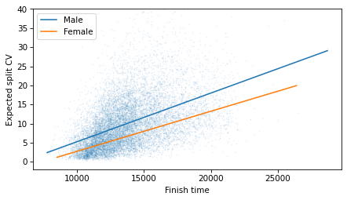

Who Runs the Best Splits?#
import os
import urllib.request
import urllib.parse
def download(url):
filename = os.path.basename(urllib.parse.unquote(url))
if not os.path.exists(filename):
urllib.request.urlretrieve(url, filename)
print("Downloaded " + filename)
download("https://github.com/AllenDowney/ThinkStats/raw/v3/nb/thinkstats.py")
try:
import empiricaldist
except ImportError:
!pip install empiricaldist
try:
import runpandas
except ImportError:
!pip install runpandas
Collecting runpandas
Downloading runpandas-0.6.0-py2.py3-none-any.whl.metadata (927 bytes)
Requirement already satisfied: pandas>=1.0.5 in /home/downey/miniconda3/envs/ThinkStats/lib/python3.10/site-packages (from runpandas) (2.2.2)
Collecting fitparse (from runpandas)
Downloading fitparse-1.2.0.tar.gz (65 kB)
━━━━━━━━━━━━━━━━━━━━━━━━━━━━━━━━━━━━━━━━ 65.7/65.7 kB 1.5 MB/s eta 0:00:00[31m1.1 MB/s eta 0:00:01
?25h Preparing metadata (setup.py) ... ?25ldone
?25hCollecting stravalib>=0.10.2 (from runpandas)
Downloading stravalib-2.0-py3-none-any.whl.metadata (10 kB)
Collecting haversine (from runpandas)
Downloading haversine-2.8.1-py2.py3-none-any.whl.metadata (5.9 kB)
Collecting pydantic (from runpandas)
Downloading pydantic-2.9.2-py3-none-any.whl.metadata (149 kB)
━━━━━━━━━━━━━━━━━━━━━━━━━━━━━━━━━━━━━━━ 149.4/149.4 kB 2.5 MB/s eta 0:00:00[31m7.8 MB/s eta 0:00:01
?25hRequirement already satisfied: pyyaml in /home/downey/miniconda3/envs/ThinkStats/lib/python3.10/site-packages (from runpandas) (6.0.1)
Collecting thefuzz (from runpandas)
Downloading thefuzz-0.22.1-py3-none-any.whl.metadata (3.9 kB)
Requirement already satisfied: numpy>=1.22.4 in /home/downey/miniconda3/envs/ThinkStats/lib/python3.10/site-packages (from pandas>=1.0.5->runpandas) (1.26.4)
Requirement already satisfied: python-dateutil>=2.8.2 in /home/downey/miniconda3/envs/ThinkStats/lib/python3.10/site-packages (from pandas>=1.0.5->runpandas) (2.9.0.post0)
Requirement already satisfied: pytz>=2020.1 in /home/downey/miniconda3/envs/ThinkStats/lib/python3.10/site-packages (from pandas>=1.0.5->runpandas) (2024.1)
Requirement already satisfied: tzdata>=2022.7 in /home/downey/miniconda3/envs/ThinkStats/lib/python3.10/site-packages (from pandas>=1.0.5->runpandas) (2024.1)
Collecting pint (from stravalib>=0.10.2->runpandas)
Downloading Pint-0.24.3-py3-none-any.whl.metadata (8.5 kB)
Requirement already satisfied: arrow in /home/downey/miniconda3/envs/ThinkStats/lib/python3.10/site-packages (from stravalib>=0.10.2->runpandas) (1.3.0)
Requirement already satisfied: requests in /home/downey/miniconda3/envs/ThinkStats/lib/python3.10/site-packages (from stravalib>=0.10.2->runpandas) (2.32.3)
Collecting annotated-types>=0.6.0 (from pydantic->runpandas)
Downloading annotated_types-0.7.0-py3-none-any.whl.metadata (15 kB)
Collecting pydantic-core==2.23.4 (from pydantic->runpandas)
Downloading pydantic_core-2.23.4-cp310-cp310-manylinux_2_17_x86_64.manylinux2014_x86_64.whl.metadata (6.6 kB)
Requirement already satisfied: typing-extensions>=4.6.1 in /home/downey/miniconda3/envs/ThinkStats/lib/python3.10/site-packages (from pydantic->runpandas) (4.12.2)
Collecting rapidfuzz<4.0.0,>=3.0.0 (from thefuzz->runpandas)
Downloading rapidfuzz-3.9.7-cp310-cp310-manylinux_2_17_x86_64.manylinux2014_x86_64.whl.metadata (12 kB)
Requirement already satisfied: six>=1.5 in /home/downey/miniconda3/envs/ThinkStats/lib/python3.10/site-packages (from python-dateutil>=2.8.2->pandas>=1.0.5->runpandas) (1.16.0)
Requirement already satisfied: types-python-dateutil>=2.8.10 in /home/downey/miniconda3/envs/ThinkStats/lib/python3.10/site-packages (from arrow->stravalib>=0.10.2->runpandas) (2.9.0.20240316)
Collecting appdirs>=1.4.4 (from pint->stravalib>=0.10.2->runpandas)
Downloading appdirs-1.4.4-py2.py3-none-any.whl.metadata (9.0 kB)
Collecting flexcache>=0.3 (from pint->stravalib>=0.10.2->runpandas)
Downloading flexcache-0.3-py3-none-any.whl.metadata (7.0 kB)
Collecting flexparser>=0.3 (from pint->stravalib>=0.10.2->runpandas)
Downloading flexparser-0.3.1-py3-none-any.whl.metadata (18 kB)
Requirement already satisfied: charset-normalizer<4,>=2 in /home/downey/miniconda3/envs/ThinkStats/lib/python3.10/site-packages (from requests->stravalib>=0.10.2->runpandas) (3.3.2)
Requirement already satisfied: idna<4,>=2.5 in /home/downey/miniconda3/envs/ThinkStats/lib/python3.10/site-packages (from requests->stravalib>=0.10.2->runpandas) (3.7)
Requirement already satisfied: urllib3<3,>=1.21.1 in /home/downey/miniconda3/envs/ThinkStats/lib/python3.10/site-packages (from requests->stravalib>=0.10.2->runpandas) (2.2.1)
Requirement already satisfied: certifi>=2017.4.17 in /home/downey/miniconda3/envs/ThinkStats/lib/python3.10/site-packages (from requests->stravalib>=0.10.2->runpandas) (2024.6.2)
Downloading runpandas-0.6.0-py2.py3-none-any.whl (66 kB)
━━━━━━━━━━━━━━━━━━━━━━━━━━━━━━━━━━━━━━━━ 66.8/66.8 kB 4.0 MB/s eta 0:00:00
?25hDownloading stravalib-2.0-py3-none-any.whl (118 kB)
━━━━━━━━━━━━━━━━━━━━━━━━━━━━━━━━━━━━━━━━ 118.6/118.6 kB 2.1 MB/s eta 0:00:00m eta -:--:--
?25hDownloading pydantic-2.9.2-py3-none-any.whl (434 kB)
━━━━━━━━━━━━━━━━━━━━━━━━━━━━━━━━━━━━━━━━ 434.9/434.9 kB 1.8 MB/s eta 0:00:00[31m2.0 MB/s eta 0:00:01m
?25hDownloading pydantic_core-2.23.4-cp310-cp310-manylinux_2_17_x86_64.manylinux2014_x86_64.whl (2.1 MB)
━━━━━━━━━━━━━━━━━━━━━━━━━━━━━━━━━━━━━━━━ 2.1/2.1 MB 1.7 MB/s eta 0:00:00m eta 0:00:01[36m0:00:01
?25hDownloading haversine-2.8.1-py2.py3-none-any.whl (7.7 kB)
Downloading thefuzz-0.22.1-py3-none-any.whl (8.2 kB)
Downloading annotated_types-0.7.0-py3-none-any.whl (13 kB)
Downloading rapidfuzz-3.9.7-cp310-cp310-manylinux_2_17_x86_64.manylinux2014_x86_64.whl (3.4 MB)
━━━━━━━━━━━━━━━━━━━━━━━━━━━━━━━━━━━━━━━━ 3.4/3.4 MB 1.6 MB/s eta 0:00:00m eta 0:00:01[36m0:00:01
?25hDownloading Pint-0.24.3-py3-none-any.whl (301 kB)
━━━━━━━━━━━━━━━━━━━━━━━━━━━━━━━━━━━━━━━━ 301.8/301.8 kB 2.8 MB/s eta 0:00:00[36m0:00:01[36m0:00:01:01
?25hDownloading appdirs-1.4.4-py2.py3-none-any.whl (9.6 kB)
Downloading flexcache-0.3-py3-none-any.whl (13 kB)
Downloading flexparser-0.3.1-py3-none-any.whl (27 kB)
Building wheels for collected packages: fitparse
Building wheel for fitparse (setup.py) ... ?25ldone
?25h Created wheel for fitparse: filename=fitparse-1.2.0-py3-none-any.whl size=68214 sha256=8c83979bf5b7741210c1aed951eb3d64286907a2caf4816c132dfa10c0ad6156
Stored in directory: /home/downey/.cache/pip/wheels/81/67/7b/77a2f8ba348bafbbad6262a80bc51be27b2f9fccbaefc74671
Successfully built fitparse
DEPRECATION: nb-black 1.0.7 has a non-standard dependency specifier black>='19.3'; python_version >= "3.6". pip 24.1 will enforce this behaviour change. A possible replacement is to upgrade to a newer version of nb-black or contact the author to suggest that they release a version with a conforming dependency specifiers. Discussion can be found at https://github.com/pypa/pip/issues/12063
Installing collected packages: fitparse, appdirs, rapidfuzz, pydantic-core, haversine, flexparser, flexcache, annotated-types, thefuzz, pydantic, pint, stravalib, runpandas
Successfully installed annotated-types-0.7.0 appdirs-1.4.4 fitparse-1.2.0 flexcache-0.3 flexparser-0.3.1 haversine-2.8.1 pint-0.24.3 pydantic-2.9.2 pydantic-core-2.23.4 rapidfuzz-3.9.7 runpandas-0.6.0 stravalib-2.0 thefuzz-0.22.1
import numpy as np
import pandas as pd
import matplotlib.pyplot as plt
from thinkstats import decorate
Title#
# https://www.bbc.com/future/article/20240731-the-sports-where-women-outperform-men
# https://github.com/adrian3/Boston-Marathon-Data-Project/blob/master/results2017.csv
df = pd.read_csv('results2017.csv')
df.head()
| place_overall | bib | name | age | gender | city | state | country_residence | contry_citizenship | name_suffix | ... | pace | projected_time | official_time | overall | gender_result | division_result | seconds | first_name | last_name | display_name | |
|---|---|---|---|---|---|---|---|---|---|---|---|---|---|---|---|---|---|---|---|---|---|
| 0 | 0.0 | 11 | Kirui, Geoffrey | 24.0 | M | Keringet | NaN | KEN | NaN | NaN | ... | 0:04:57 | - | 2:09:37 | 1.0 | 1.0 | 1.0 | 7777 | Geoffrey | Kirui | Geoffrey Kirui |
| 1 | 1.0 | 17 | Rupp, Galen | 30.0 | M | Portland | OR | USA | NaN | NaN | ... | 0:04:58 | - | 2:09:58 | 2.0 | 2.0 | 2.0 | 7798 | Galen | Rupp | Galen Rupp |
| 2 | 2.0 | 23 | Osako, Suguru | 25.0 | M | Machida-City | NaN | JPN | NaN | NaN | ... | 0:04:59 | - | 2:10:28 | 3.0 | 3.0 | 3.0 | 7828 | Suguru | Osako | Suguru Osako |
| 3 | 3.0 | 21 | Biwott, Shadrack | 32.0 | M | Mammoth Lakes | CA | USA | NaN | NaN | ... | 0:05:03 | - | 2:12:08 | 4.0 | 4.0 | 4.0 | 7928 | Shadrack | Biwott | Shadrack Biwott |
| 4 | 4.0 | 9 | Chebet, Wilson | 31.0 | M | Marakwet | NaN | KEN | NaN | NaN | ... | 0:05:04 | - | 2:12:35 | 5.0 | 5.0 | 5.0 | 7955 | Wilson | Chebet | Wilson Chebet |
5 rows × 29 columns
df['age'].value_counts().sort_index()
age
18.0 20
19.0 43
20.0 83
21.0 147
22.0 210
...
79.0 3
80.0 3
81.0 2
83.0 1
84.0 1
Name: count, Length: 66, dtype: int64
df['gender'].value_counts().sort_index()
gender
F 11972
M 14438
Name: count, dtype: int64
split_cols = ['5k', '10k', '15k', '20k', '25k', '30k', '35k', '40k']
def make_timedelta(series):
return pd.to_timedelta(series, errors='coerce')
cumulative_splits = df[split_cols].map(make_timedelta)
cumulative_splits.head()
| 5k | 10k | 15k | 20k | 25k | 30k | 35k | 40k | |
|---|---|---|---|---|---|---|---|---|
| 0 | 0 days 00:15:25 | 0 days 00:30:28 | 0 days 00:45:44 | 0 days 01:01:15 | 0 days 01:16:59 | 0 days 01:33:01 | 0 days 01:48:19 | 0 days 02:02:53 |
| 1 | 0 days 00:15:24 | 0 days 00:30:27 | 0 days 00:45:44 | 0 days 01:01:15 | 0 days 01:16:59 | 0 days 01:33:01 | 0 days 01:48:19 | 0 days 02:03:14 |
| 2 | 0 days 00:15:25 | 0 days 00:30:29 | 0 days 00:45:44 | 0 days 01:01:16 | 0 days 01:17:00 | 0 days 01:33:01 | 0 days 01:48:31 | 0 days 02:03:38 |
| 3 | 0 days 00:15:25 | 0 days 00:30:29 | 0 days 00:45:44 | 0 days 01:01:19 | 0 days 01:17:00 | 0 days 01:33:01 | 0 days 01:48:58 | 0 days 02:04:35 |
| 4 | 0 days 00:15:25 | 0 days 00:30:28 | 0 days 00:45:44 | 0 days 01:01:15 | 0 days 01:16:59 | 0 days 01:33:01 | 0 days 01:48:41 | 0 days 02:05:00 |
splits = cumulative_splits.diff(axis=1)
splits['5k'] = cumulative_splits['5k']
splits.head()
| 5k | 10k | 15k | 20k | 25k | 30k | 35k | 40k | |
|---|---|---|---|---|---|---|---|---|
| 0 | 0 days 00:15:25 | 0 days 00:15:03 | 0 days 00:15:16 | 0 days 00:15:31 | 0 days 00:15:44 | 0 days 00:16:02 | 0 days 00:15:18 | 0 days 00:14:34 |
| 1 | 0 days 00:15:24 | 0 days 00:15:03 | 0 days 00:15:17 | 0 days 00:15:31 | 0 days 00:15:44 | 0 days 00:16:02 | 0 days 00:15:18 | 0 days 00:14:55 |
| 2 | 0 days 00:15:25 | 0 days 00:15:04 | 0 days 00:15:15 | 0 days 00:15:32 | 0 days 00:15:44 | 0 days 00:16:01 | 0 days 00:15:30 | 0 days 00:15:07 |
| 3 | 0 days 00:15:25 | 0 days 00:15:04 | 0 days 00:15:15 | 0 days 00:15:35 | 0 days 00:15:41 | 0 days 00:16:01 | 0 days 00:15:57 | 0 days 00:15:37 |
| 4 | 0 days 00:15:25 | 0 days 00:15:03 | 0 days 00:15:16 | 0 days 00:15:31 | 0 days 00:15:44 | 0 days 00:16:02 | 0 days 00:15:40 | 0 days 00:16:19 |
def total_seconds(td):
return td.total_seconds()
split_seconds = splits.map(total_seconds)
split_seconds.head()
| 5k | 10k | 15k | 20k | 25k | 30k | 35k | 40k | |
|---|---|---|---|---|---|---|---|---|
| 0 | 925.0 | 903.0 | 916.0 | 931.0 | 944.0 | 962.0 | 918.0 | 874.0 |
| 1 | 924.0 | 903.0 | 917.0 | 931.0 | 944.0 | 962.0 | 918.0 | 895.0 |
| 2 | 925.0 | 904.0 | 915.0 | 932.0 | 944.0 | 961.0 | 930.0 | 907.0 |
| 3 | 925.0 | 904.0 | 915.0 | 935.0 | 941.0 | 961.0 | 957.0 | 937.0 |
| 4 | 925.0 | 903.0 | 916.0 | 931.0 | 944.0 | 962.0 | 940.0 | 979.0 |
df['cv'] = split_seconds.std(axis=1) / split_seconds.mean(axis=1) * 100
df['cv'].describe()
count 26406.000000
mean 9.075549
std 6.576482
min 0.364927
25% 4.590847
50% 7.740286
75% 11.793587
max 133.265879
Name: cv, dtype: float64
df.groupby('gender')['cv'].describe()
| count | mean | std | min | 25% | 50% | 75% | max | |
|---|---|---|---|---|---|---|---|---|
| gender | ||||||||
| F | 11969.0 | 7.938585 | 5.434206 | 0.427746 | 4.298868 | 6.967892 | 10.219680 | 106.089578 |
| M | 14437.0 | 10.018150 | 7.257189 | 0.364927 | 4.904113 | 8.615780 | 13.396307 | 133.265879 |
index = df['cv'].idxmin()
df.loc[1301]
place_overall 1301.0
bib 1396
name Ferguson, J Daniel
age 36.0
gender M
city New York
state NY
country_residence USA
contry_citizenship NaN
name_suffix NaN
5k 0:21:01
10k 0:42:06
15k 1:03:12
20k 1:24:20
half 1:28:59
25k 1:45:28
30k 2:06:41
35k 2:27:56
40k 2:49:08
pace 0:06:50
projected_time -
official_time 2:58:54
overall 1302.0
gender_result 1219.0
division_result 938.0
seconds 10734
first_name J Daniel
last_name Ferguson
display_name J Daniel Ferguson
cv 0.364927
Name: 1301, dtype: object
split_seconds.iloc[index]
5k 1261.0
10k 1265.0
15k 1266.0
20k 1268.0
25k 1268.0
30k 1273.0
35k 1275.0
40k 1272.0
Name: 1301, dtype: float64
df['total_seconds'] = df['official_time'].map(make_timedelta).map(total_seconds)
male = df.query("gender == 'M'")
female = df.query("gender == 'F'")
from empiricaldist import Cdf
cdf_male = Cdf.from_seq(male['cv'])
cdf_female = Cdf.from_seq(female['cv'])
cdf_male.plot()
cdf_female.plot()
decorate(xscale='log')

def scatter(df):
ys = df['cv']
plt.scatter(df['total_seconds'], ys, marker='.', s=1, alpha=0.1)
decorate()
scatter(male)
scatter(female)
decorate(xlabel='Finish time', ylabel='Expected split CV')

import statsmodels.api as sm
import statsmodels.formula.api as smf
# Fit a Gamma regression with a log link
model = smf.glm(formula='cv ~ total_seconds', data=male,
family=sm.families.Gamma(sm.families.links.log()))
result = model.fit()
result.summary()
| Dep. Variable: | cv | No. Observations: | 14437 |
|---|---|---|---|
| Model: | GLM | Df Residuals: | 14435 |
| Model Family: | Gamma | Df Model: | 1 |
| Link Function: | log | Scale: | 0.40093 |
| Method: | IRLS | Log-Likelihood: | -43891. |
| Date: | Sun, 22 Sep 2024 | Deviance: | 5693.9 |
| Time: | 11:36:21 | Pearson chi2: | 5.79e+03 |
| No. Iterations: | 15 | Pseudo R-squ. (CS): | 0.2364 |
| Covariance Type: | nonrobust |
| coef | std err | z | P>|z| | [0.025 | 0.975] | |
|---|---|---|---|---|---|---|
| Intercept | 0.4084 | 0.029 | 14.266 | 0.000 | 0.352 | 0.464 |
| total_seconds | 0.0001 | 2.05e-06 | 65.462 | 0.000 | 0.000 | 0.000 |
low, high = male['total_seconds'].min(), male['total_seconds'].max()
xs = np.linspace(low, high)
ys = result.predict
scatter(male)
xs, ys = fit_line(male)
plt.plot(xs, ys, label='Male')
xs, ys = fit_line(female)
plt.plot(xs, ys, label='Female')
decorate(xlabel='Finish time', ylabel='Expected split CV', ylim=[-2, 40])

get_slope(female)
0.0010499371945656842